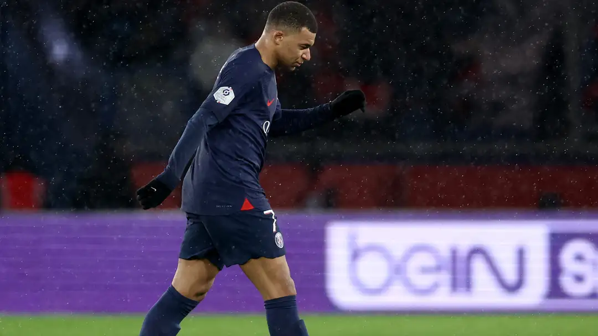

'Wish him the best' - Luis Enrique sends odd message to Kylian Mbappe after benching PSG's star man for underwhelming Reims draw
Paris Saint-Germain boss Luis Enrique seemed to confirm Kylian Mbappe's imminent departure from the club as he wished the Frenchman "the best"
The former Spain national team coach dropped Mbappe from the Parisians' starting lineup during their underwhelming 2-2 draw at home to Reims. The World Cup winner was brought on in the 73rd minute of the game but failed to make an impact on proceedings.
Talking to Amazon Prime Video after the game, Luis Enrique said: "I wish all the best to Kylian Mbappé for his future. He’s a fantastic player and even more as a person. I really wish him all the best."
